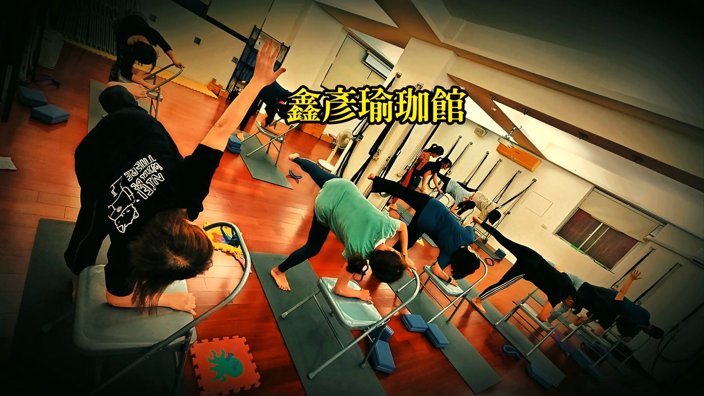

高低肩、長短腳，是骨盆在歪嗎？

你有沒有站在鏡子前，發現一邊肩膀好像比較高，或是量褲長時一隻腳看起來比較長？別急著擔心自己「骨頭長歪了」。這種左右不太一樣的感覺，其實很多人都有，而且大部分不是骨頭真的不一樣長，而是身體兩側的鬆緊被生活習慣拉出了差距。
先分清楚：功能性，還是結構性？
身體的左右不對稱，大致可以分成兩種。搞懂這兩種的差別，你就不會自己嚇自己。
- 功能性失衡：骨頭本身長度正常，但兩側肌肉張力不一樣、骨盆有點旋轉或側傾，讓你「看起來」高低肩、長短腳。這種是可以透過放鬆與訓練慢慢調回來的。
- 結構性差異：骨頭本身真的有長短，通常從小就有，或曾經骨折、開刀。這種需要靠 X 光等影像檢查才能確認，不是靠伸展就能改變。
好消息是，臨床上絕大多數人的高低肩、長短腳，屬於前者——也就是「可以動、可以改善」的那一種。
骨盆一轉，全身跟著歪
骨盆是身體的地基。當你習慣翹同一邊腳、單手滑手機、或總是側背同一邊包包，一邊的髂腰肌、臀大肌與豎脊肌張力就會慢慢和另一邊拉開差距。骨盆一旦被拉得往前旋或往一側傾，坐骨的高低就變了，那隻腳量起來自然「比較長」。
而骨盆歪了，脊椎為了讓你的眼睛保持水平，會在上面代償性地彎回來——結果就反映到肩膀，變成你在鏡子裡看到的高低肩。上斜方肌與提肩胛肌比較緊的那一側，肩膀往往就被往上提。所以肩膀和骨盆，常常是同一條問題的兩端。
多數高低肩、長短腳是「張力差」畫出來的視覺差，不是骨頭長短不同——這代表它有機會被調回來。
壁繩怎麼幫忙找回左右平衡
功能性失衡最需要的，是「兩邊分開處理」：緊的那側好好放鬆、弱的那側重新喚醒。壁繩瑜伽的好處，就是繩子能幫你把身體穩定在對的位置，讓你不必靠蠻力硬撐，就能感覺到左右哪一邊比較卡。老師會針對你旋轉或側傾的方向，帶你單側伸展與啟動，把地基一點一點喬正。如果你也常覺得腰或小腹卡卡的，可以先讀讀骨盆前傾＝小腹凸？先看懂再收，會更明白骨盆和體態的關係。

今天就能做的一個小練習
找一面牆，背靠著站，腳跟離牆約一個拳頭。輕輕把後腦、上背、臀部貼向牆面，感覺兩邊臀部盡量平均受力。接著用鼻子慢慢吸氣 4 秒、吐氣 6 秒，一邊吐氣一邊想像把比較高的那側肩膀「往下、往後」放鬆。做 5 到 8 個呼吸就好。這個動作不會一次就把你調正，重點是每天提醒身體「兩邊要一樣」，規律做，久了張力差才會慢慢縮小。
本文為體態與姿勢的一般衛教與練習分享，非醫療診斷或治療。若有疼痛、舊傷或特殊病史，請先諮詢合格醫療專業人員。